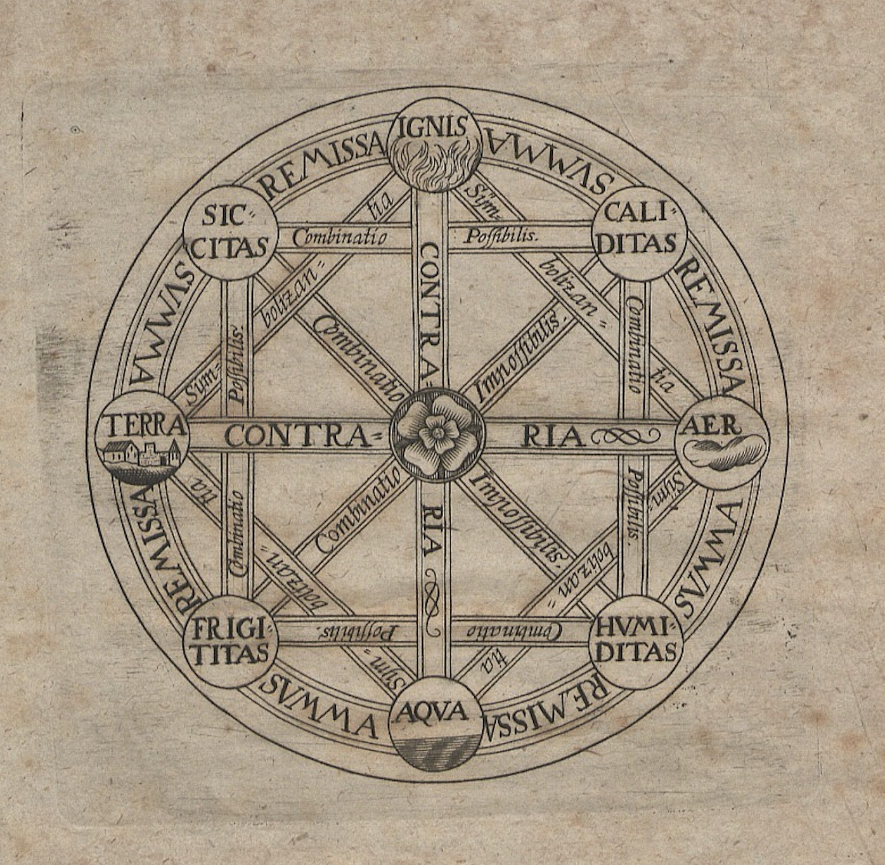

1666

Mathematician and philosopher Gottfried Leibniz publishes Dissertatio de arte combinatoria (On the Combinatorial Art), following Ramon Llull in proposing an alphabet of human thought and arguing that all ideas are nothing but combinations of a relatively small number of simple concepts.